Устройство велосипеда
На первый взгляд конструкция велосипеда кажется простой: рама, руль, седло и два колеса, педали и цепь — ничего сложного. Но это только на первый взгляд. Здесь вы сможете найти всю информацию об устройстве велосипеда. Для удобства поиска элементы будут разделены по категориям.
Втулка
Центральная деталь велосипедного колеса; состоит из оси, подшипников и корпуса, к которому крепятся спицы. Втулка заднего колеса, в отличие от втулки переднего колеса, имеет посадочное место для задних звезд.
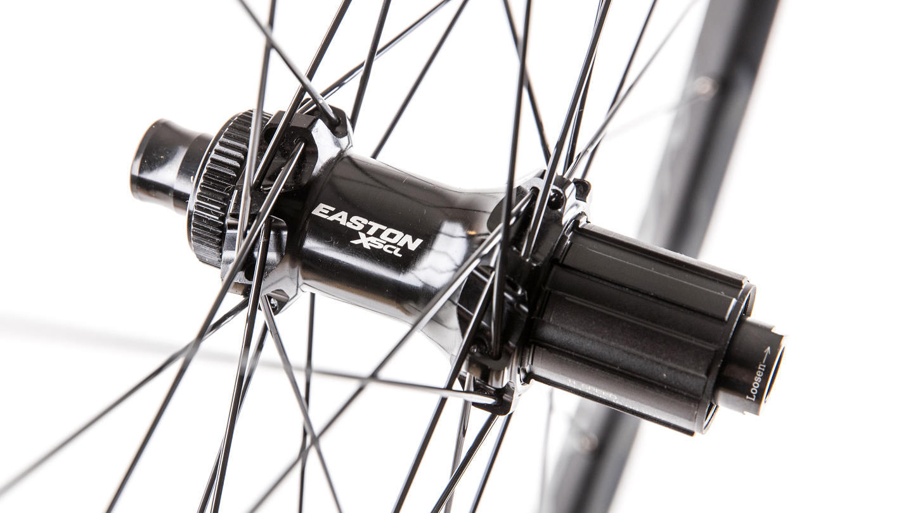Дропаут
Место установки колеса, особая форма открытой крепежной петли. Дропаут означает, что колесо буквально выпадет из места крепления, если не будет закреплено, например, эксцентриком.
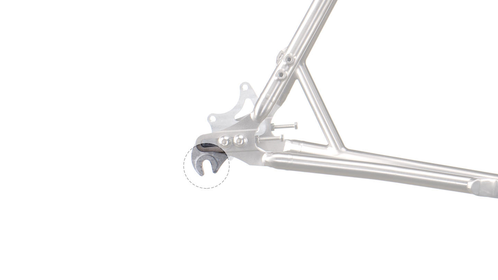Колесо
Колесо в традиционном понимании. В велосипедной конструкции колесо состоит из центральной втулки, обода, спиц, внутренней камеры с ниппелем для подачи и откачки воздуха, покрышки. Набор колес по-английски называется wheelset или wheel set.
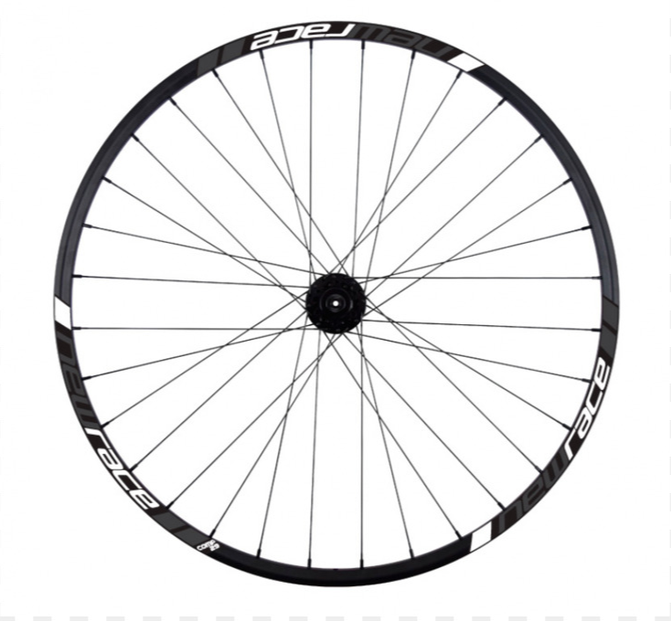Ниппель
Деталь колеса велосипеда; представляет собой клапан, который открывается для впуска газа в камеру (например, воздуха для накачивания шины), а затем автоматически закрывается и остается герметичным, благодаря давлению в камере и/или пружине, чтобы предотвратить выход газа.
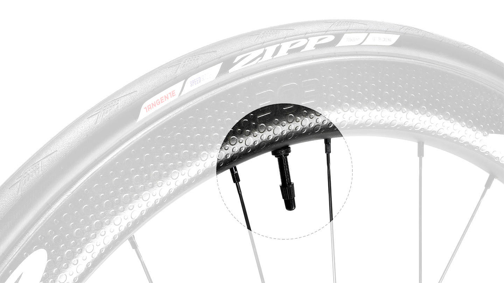Ниппель
Деталь колеса велосипеда; представляет собой клапан, который открывается для впуска газа в камеру (например, воздуха для накачивания шины), а затем автоматически закрывается и остается герметичным, благодаря давлению в камере и/или пружине, чтобы предотвратить выход газа.
Обод
Часть колеса, к наружной части которой прикреплена покрышка чаще с камерой внутри, а ко внутренней — спицы, идущие ко втулке колеса. Может являться частью тормозной системы велосипеда. Ободы колес, предназначенные для использования с ободными тормозами, имеют гладкие параллельные боковые поверхности, к которым прижимаются тормозные колодки для обеспечения торможения. Ободы колес с дисковыми или барабанными (расположенными внутри втулки) тормозами могут не иметь таких поверхностей.
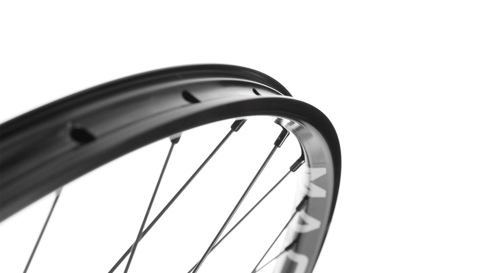Ось колеса
Приспособление, с помощью которого колесо крепится в дропаутах. В современных велосипедах часто используются эксцентрики — оси с зажимным крепежным механизмом, который позволяет быстро снимать и устанавливать колесо.
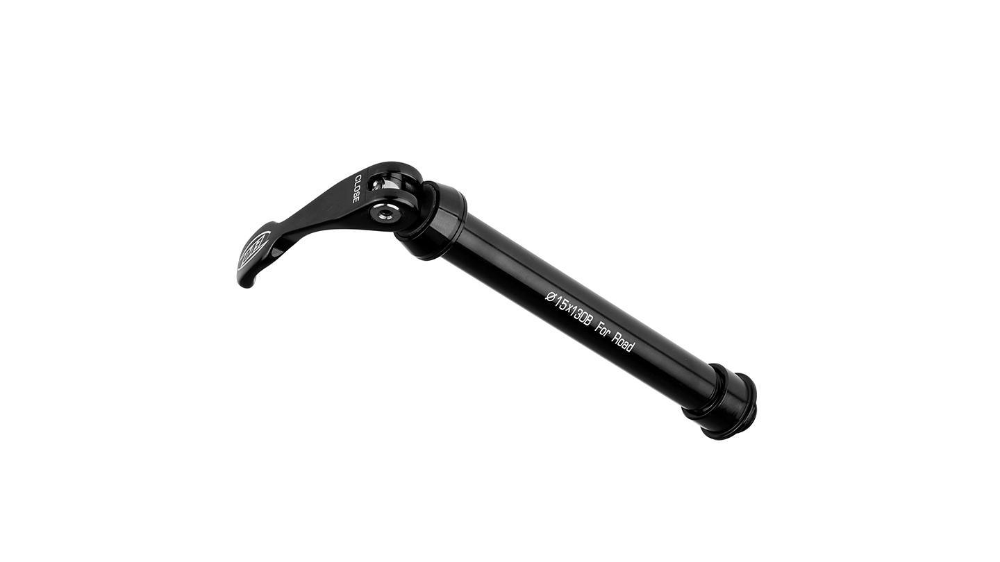Планетарная втулка
Другое название — «планетарная коробка передач». Это втулка заднего колеса велосипеда, внутри которой расположена система переключения передач. Шестерни и механизм изменения передаточного отношения находятся в смазке в закрытой защитной оболочке.
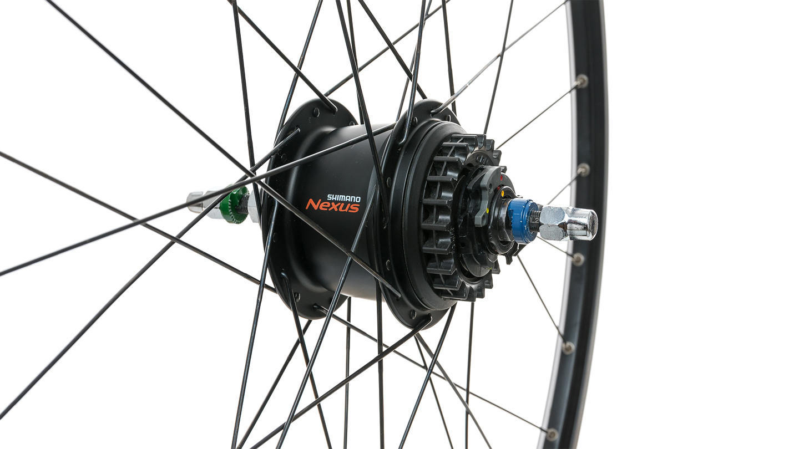Флип-флоп втулка
Другое название — «двухсторонняя втулка». Это втулка, с каждой стороны которой есть резьба, позволяющая установить либо фиксированную звезду, либо звезду со свободным ходом. При использовании такой втулки простым переворотом колеса с одной стороны на другую можно сменить тип привода и соотношение передач велосипеда.
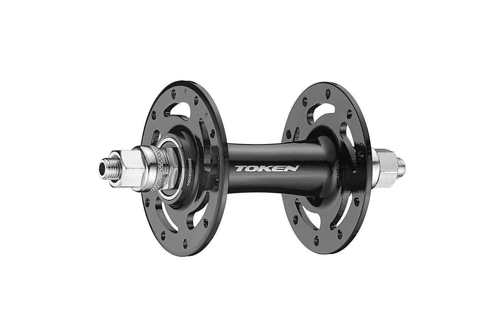Держатель заднего переключателя
Другое название — «петух». Съемная деталь, которая устанавливается между концом нижнего пера рамы, и задним переключателем скоростей для того, чтобы принимать на себя энергию удара и деформироваться в случае падения велосипеда или удара по заднему переключателю. Деталь также носит названия «сменный крюк» или «серьга на раму».
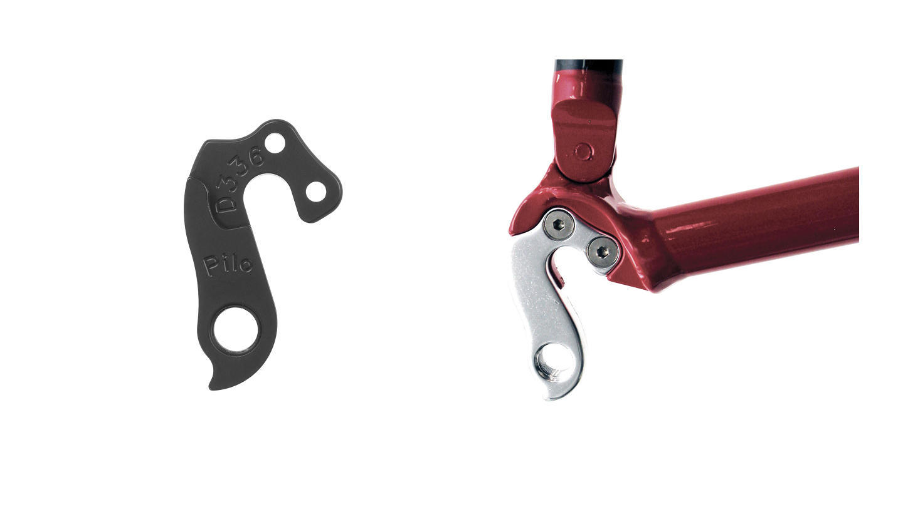Задний переключатель
Механизм, обычно с троссовым приводом, который перемещает цепь по задним звездам для переключения передач велосипеда. В некоторых современных моделях велосипедов используется электронная система переключения передач с электрическими кабелями вместо тросов.
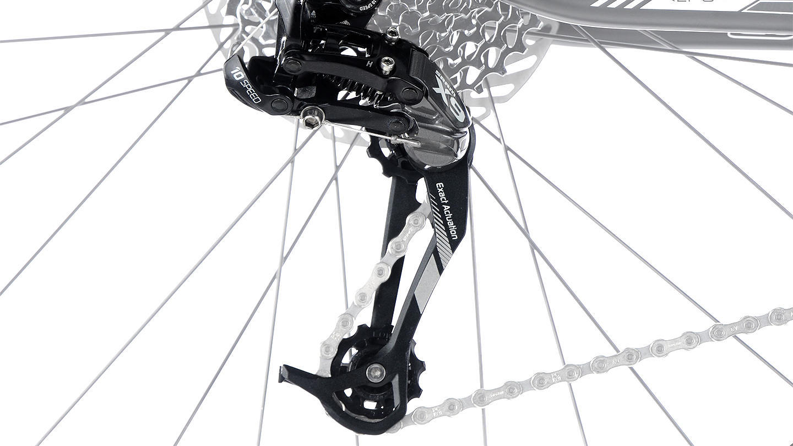Каретка
Часть велосипедной трансмиссии; состоит из оси и подшипников, устанавливается в кареточный стакан для крепления шатунов на раме велосипеда. Благодаря подшипникам, позволяет шатунам вращаться свободно.
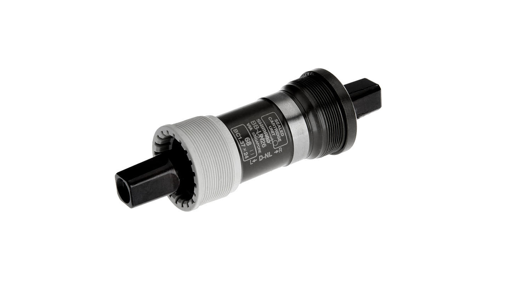Кассета
Деталь велосипедной трансмиссии, состоящая из нескольких звезд различного диаметра от большего к меньшему, которая крепится ко втулке заднего колеса велосипеда. По звездам кассеты с помощью заднего переключателя перемещается цепь, меняя передачи велосипеда.
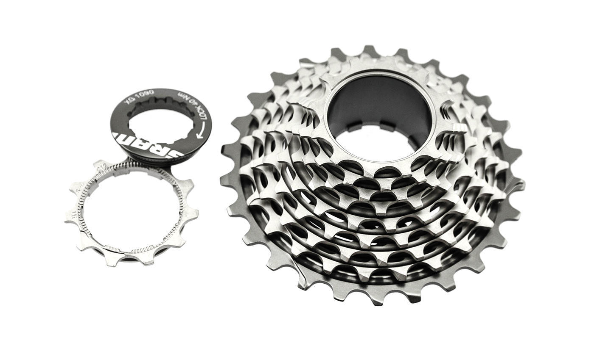Передний переключатель
Часть трансмиссионной системы велосипеда; деталь, обычно с троссовым приводом, которая перемещает цепь от одной передней звезды к другой, тем самым переключая передачи. В некоторых современных моделях велосипедов используется электронная система переключения передач с электрическими кабелями вместо тросов.
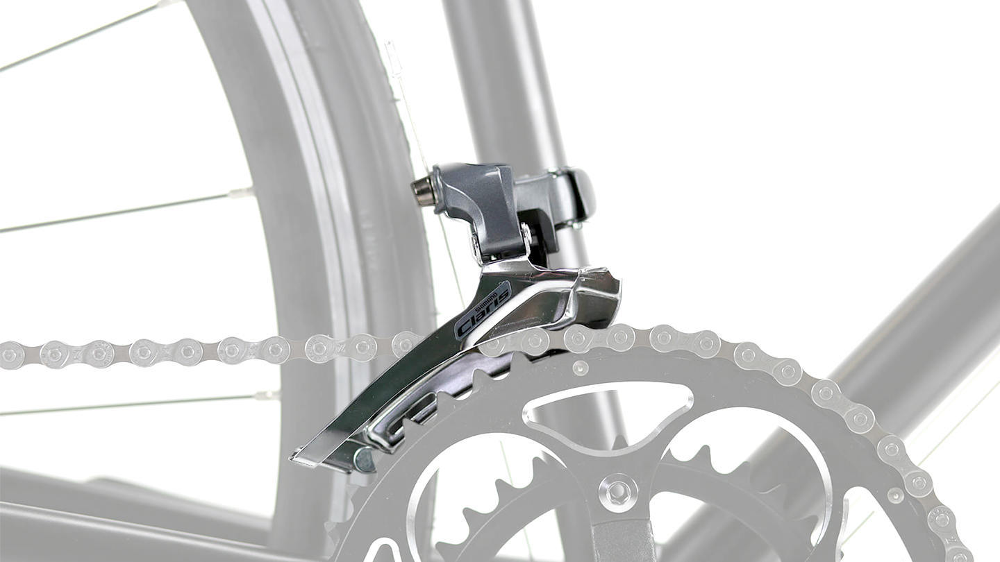Ремень
Зубчатый ремень из углепластика/карбона для передачи усилия от передней звезды к задней звезде. Используется в качестве альтернативы металлической цепи.
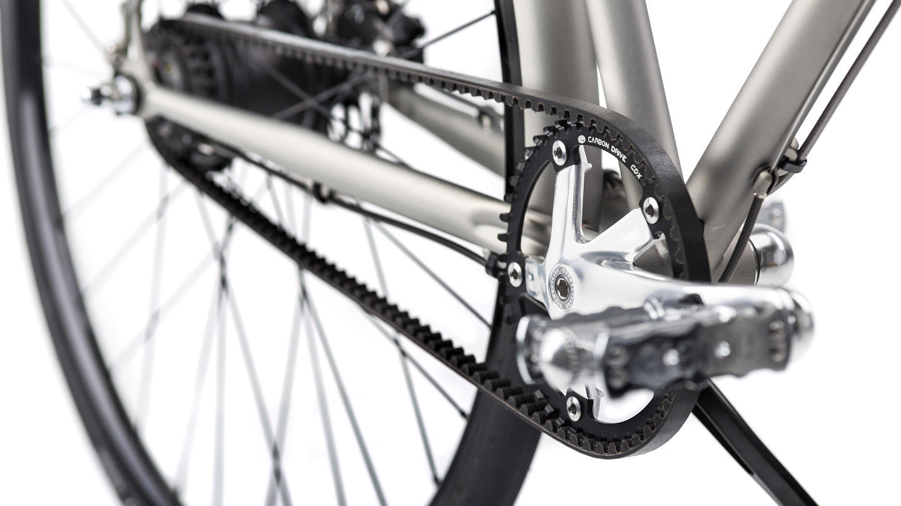Система
Деталь велосипедной трансмиссии, состоящая из шатуна и звезды или нескольких звезд различного диаметра. По звезде системы перемещается цепь, меняя передачи и передавая усилие с педалей к заднему колесу велосипеда.
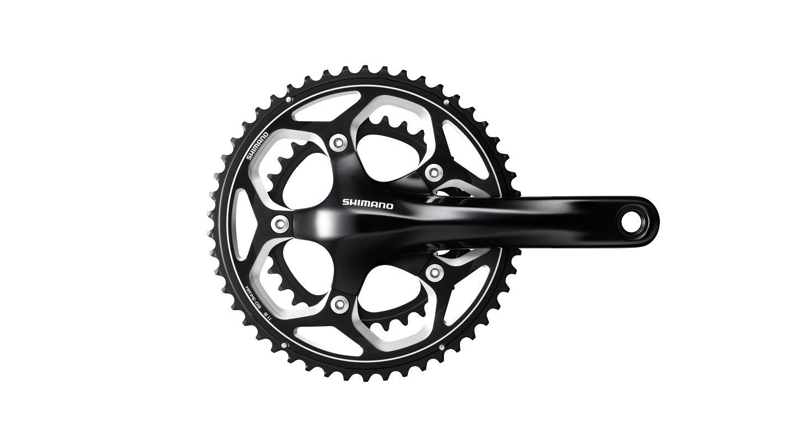Шатун
Деталь системы трансмиссии велосипеда; рычаг, передающий усилие с педалей на вал каретки. С одной стороны шатунов устанавливаются педали, к другой стороне крепятся передняя звезда или система звезд, шатуны устанавливаются на вал каретки с противоположных сторон велосипеда под углом 180° друг к другу. Велосипедист попеременно производит давление на каждый из шатунов при вращении педалей, тем самым передает усилие от педалей к заднему колесу велосипеда.
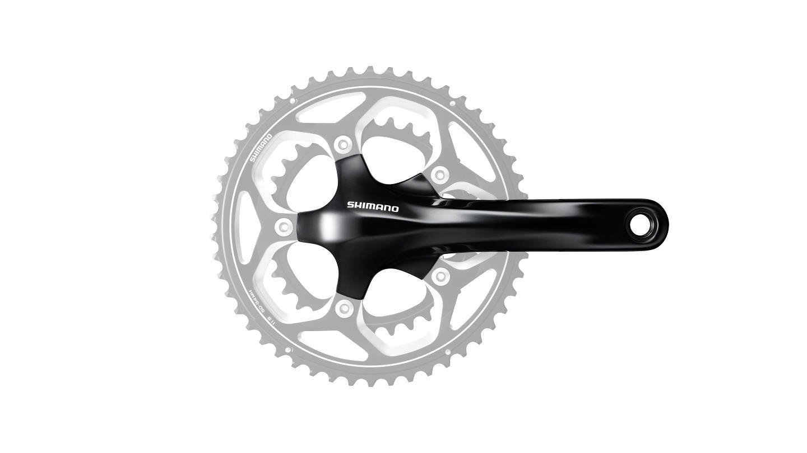Шифтер
Устройство, как правило крепящееся к рулю велосипеда и позволяющее переключать передачи. Другое название — «манетка». В механическом шифтере cмена передач осуществляется передачей усилия через тросиковый привод на переключатель, изменяющий положение цепи на звездах. Существуют электронные шифтеры, переключающие передачи с помощью электрических сигналов, передающихся по электрическим кабелям к переднему или заднему электронному переключателю.
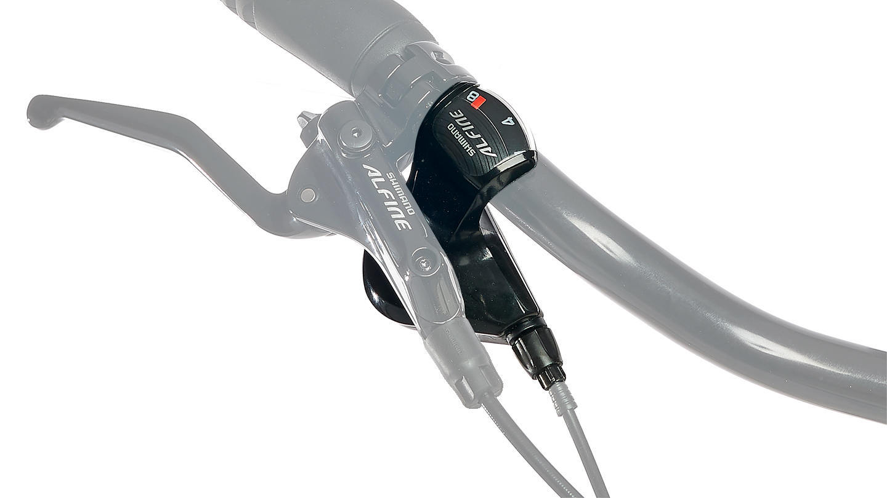Амортизатор
Mеханическое или гидравлическое устройство в конструкции велосипеда, предназначенное для смягчения ударов колес о грунт. Может находиться в передней вилке и/или в задней части рамы под сиденьем.
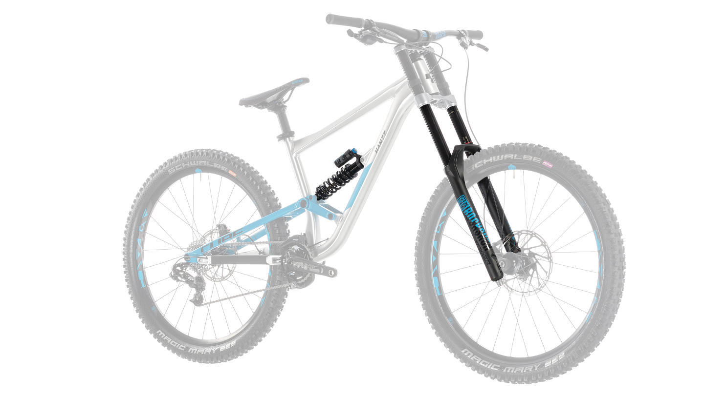Верхнее перо
Парная деталь, часть рамы велосипеда; труба небольшого диаметра, соединяющая подседельную трубу с местом крепления втулки заднего колеса. В конструкцию рамы велосипеда входят два верхних пера, идущих вдоль правой и левой сторон заднего колеса.
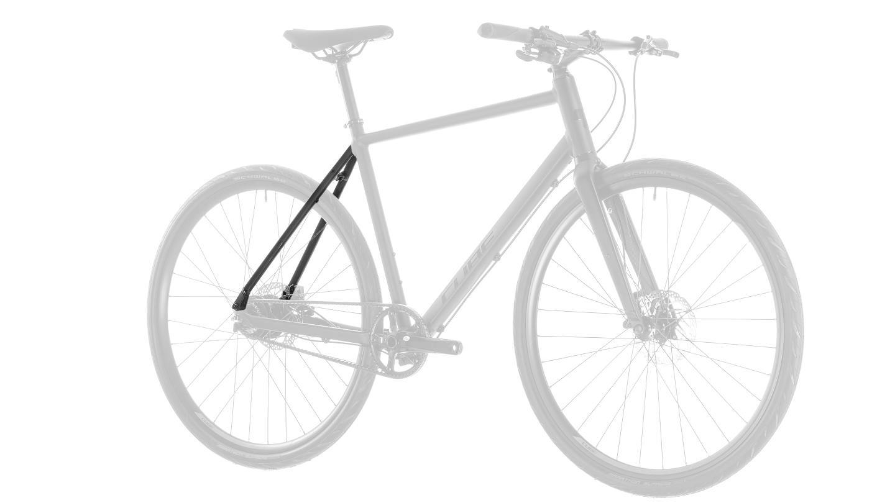Верхняя рама
Часть рамы велосипеда; труба, соединяющая подседельную трубу с рулевой трубой. Может иметь различный наклон и форму, определяя геометрию рамы и назначение велосипеда.
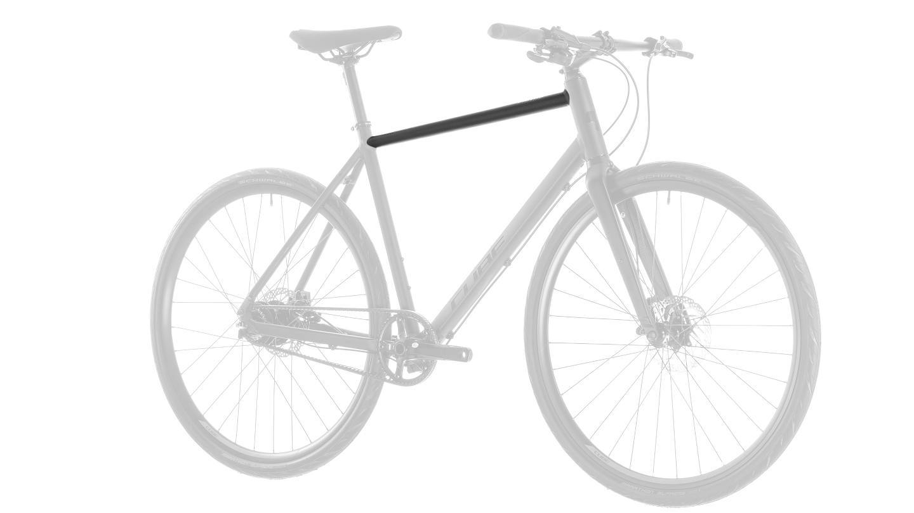Вилка
Деталь, к верхней части которой крепится вынос руля, к нижней — переднее колесо. Может изготавливаться из различных материалов, иметь различную форму и дополняться амортизаторами.
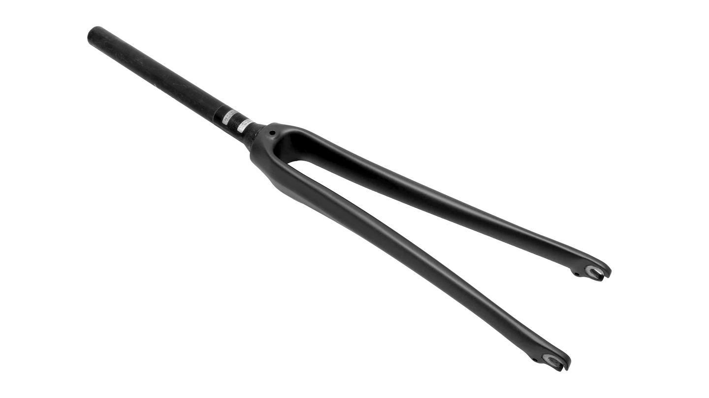Кареточный стакан
Место соединения подседельной трубы, нижней трубы и нижних перьев велосипеда, также место установки каретки.
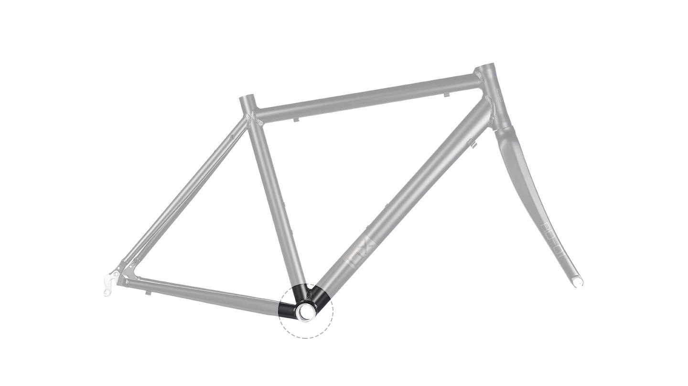Нижнее перо
Парная деталь, часть рамы велосипеда; труба, соединяющая стакан каретки с местом крепления втулки заднего колеса. В конструкцию рамы велосипеда входят два нижних пера, идущих вдоль правой и левой сторон заднего колеса.
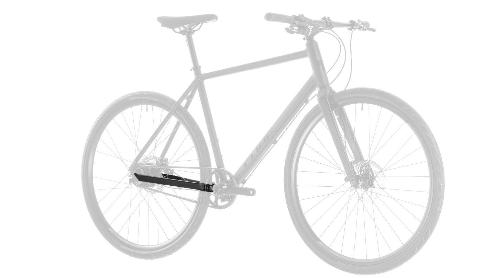Нижняя труба
Часть рамы велосипеда; труба, соединяющая кареточный стакан с рулевой трубой.
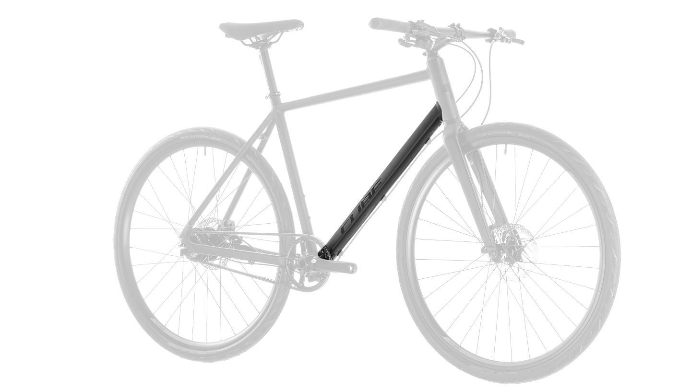Подседельная труба
Часть рамы велосипеда; относительно вертикальная труба, идущая от сиденья к кареточному стакану. В подседельную трубу вставляется подседельный штырь с сиденьем.
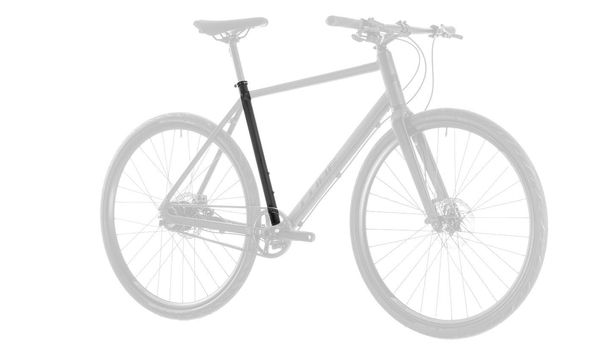Рама
Основная деталь велосипеда, состоящая из нескольких труб, соединенных в форме многоугольника. Обеспечивает места для крепления колес, руля, сидения и других компонентов, которые составляют велосипед. Может иметь различную геометрию и изготавливаться из различных материалов, в зависимости от назначения велосипеда.
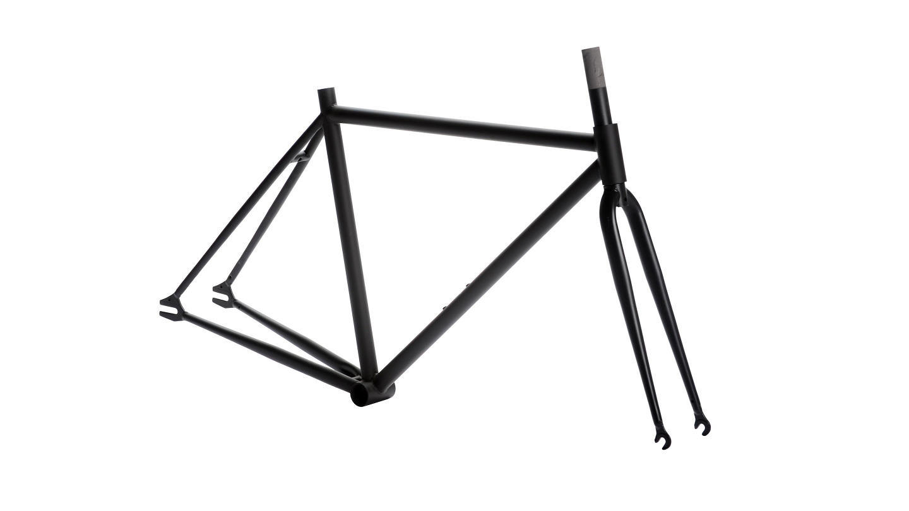Вынос руля
Деталь, которая крепит руль к верхнему концу вилки.
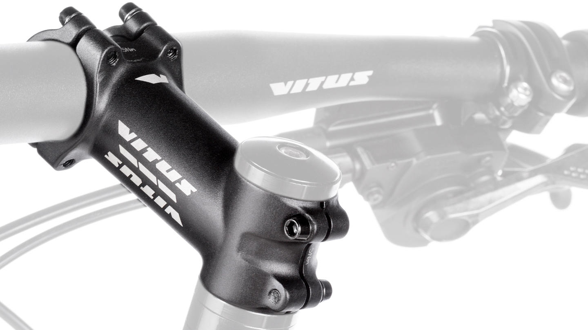Рулевая колонка
Набор элементов, предназначенный для обеспечения вращения вилки в рулевой трубе рамы. Состоит из верхней и нижней чашек, подшипников и нескольких упорных колец.
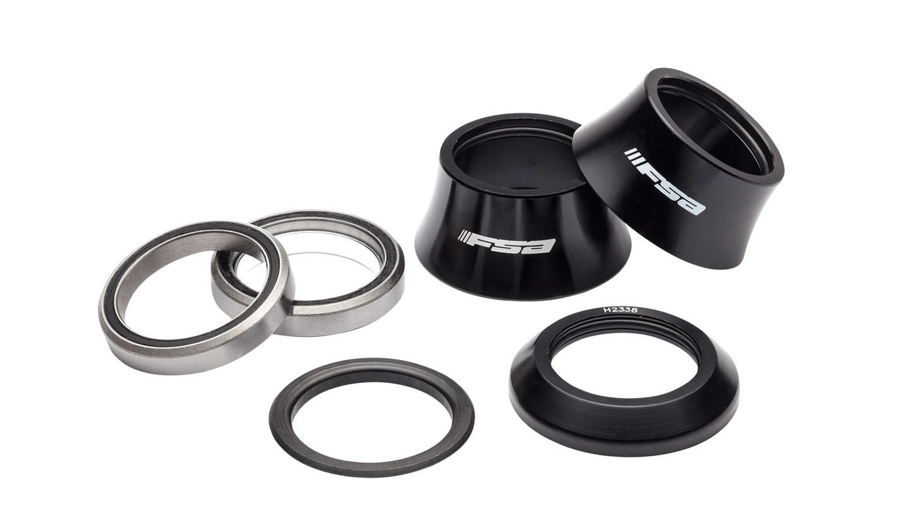Рулевая труба
Другое название — «рулевой стакан». Часть рамы велосипеда, находящаяся на стыке верхней и нижней труб рамы. В рулевую трубу устанавливается рулевая колонка и вилка.
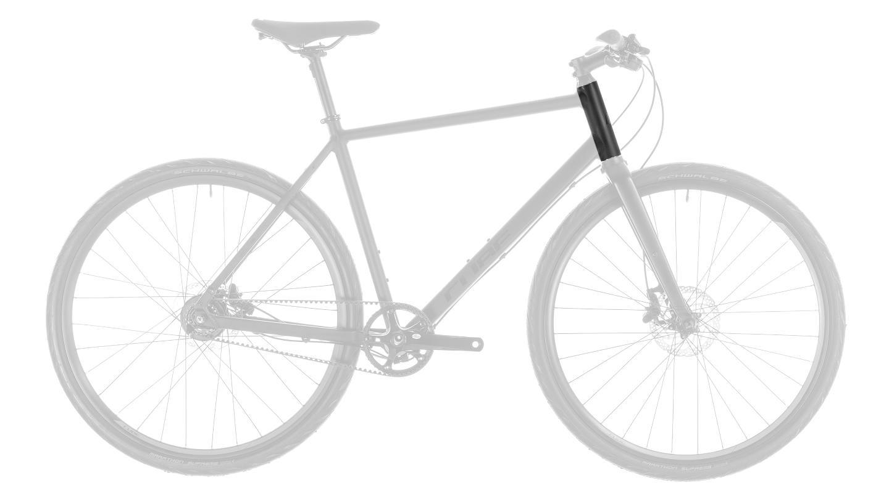Руль
Рычаг, прикрепленный, обычно с помощью выноса руля, к вилке. Позволяет осуществлять управление велосипедом и обеспечивает места для крепления деталей управления и аксессуаров. Руль может иметь различные формы, в зависимости от предназначения велосипеда.
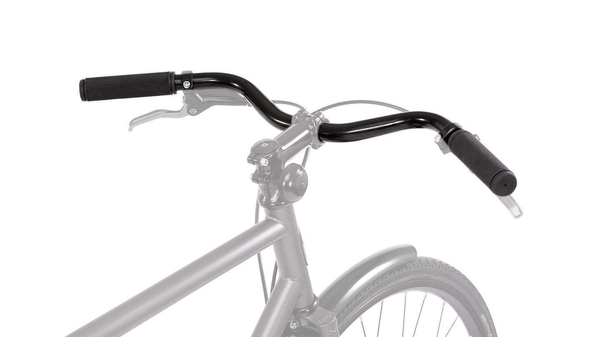Задний тормоз
Устройство для остановки или замедления велосипеда, как правило, расположенное на задней части рамы или во втулке заднего колеса. Может управляться тормозными ручками, закрепленными на руле. Может быть различной конструкции или отсутствовать в моделях велосипедов с одной передачей, в которых остановка происходит движением ног назад.
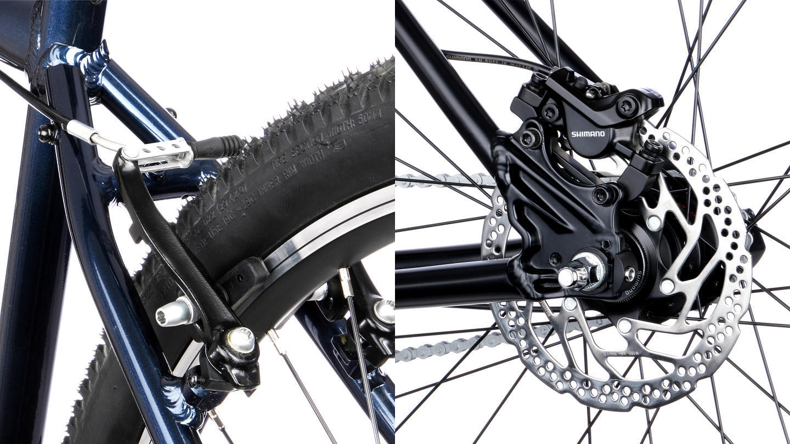Передний тормоз
Устройство для остановки или замедления велосипеда, расположенное на вилке велосипеда. Управляется тормозными ручками, установленными на руле. Может быть различной конструкции или отсутствовать в моделях велосипедов с одной передачей, в которых остановка происходит движением ног назад.
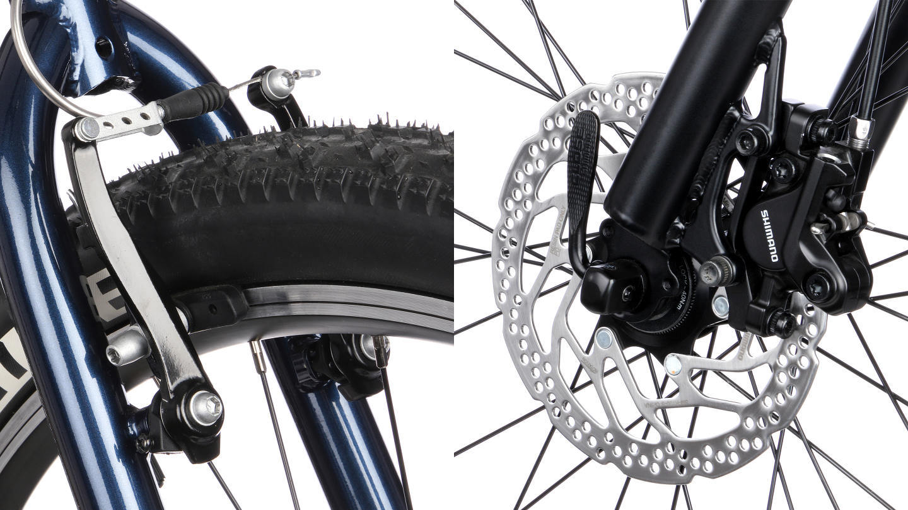Тормозная колодка
Расходная деталь тормозной системы велосипеда. Колодки обычно устанавливаются парами по одной с каждой стороны колеса. Замедление и остановка велосипеда происходит за счет прижатия колодки к боковой части обода колеса или тормозного диска.
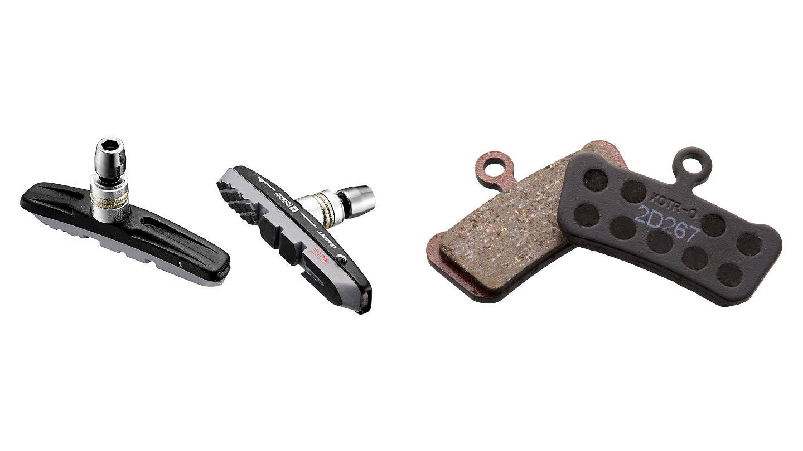Тормозная ручка
Устройство, крепящееся к рулю и позволяющие управлять тормозами велосипеда. Как правило, тормозная ручка, устанавливаемая под левую руку, управляет передним тормозом, а устанавливаемая под правую руку — задним. Также может называться «тормозной рычаг».
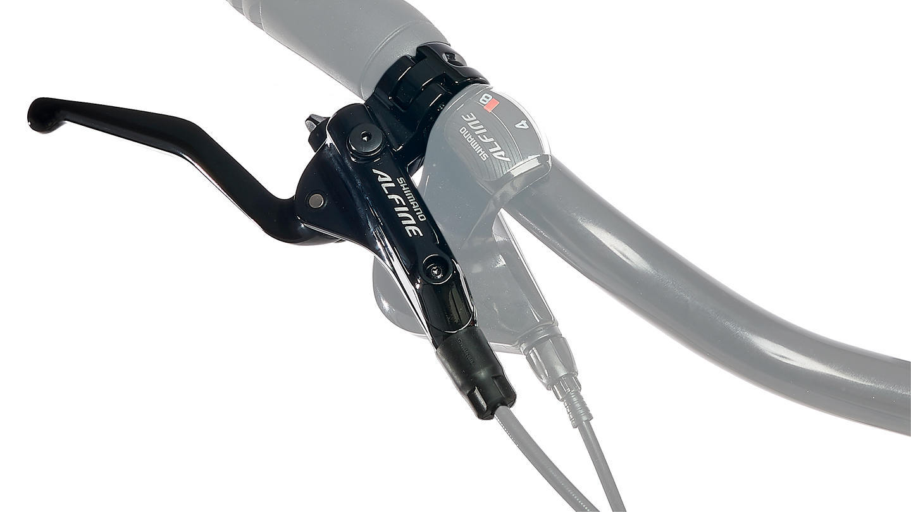Брызговик
Деталь из гибкого материала (кожи, резины, пластика), расположенная на конце щитка для дополнительной защиты велосипедиста от летящих из-под колеса брызг воды или грязи.
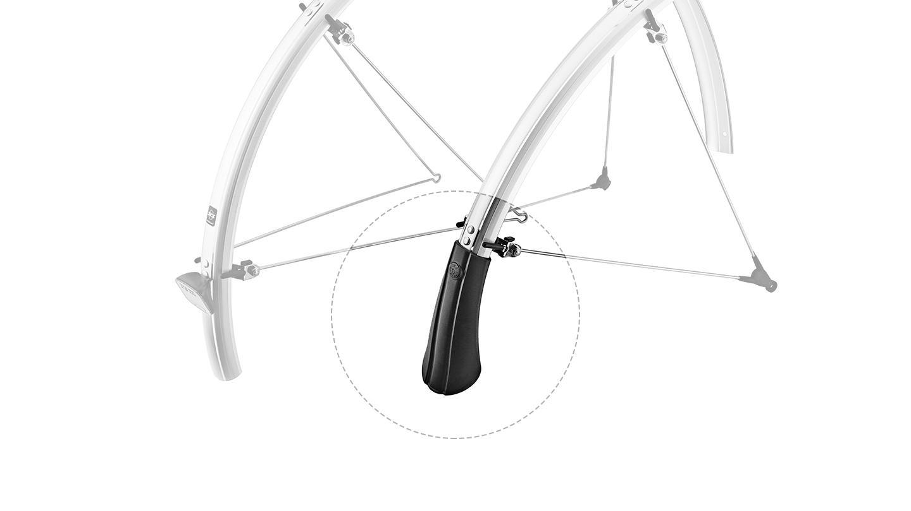Защита цепи
Cпециальный кожух, который устанавливается над цепью и передней звездой для того, чтобы исключить попадание одежды велосипедиста между звездой и звеньями цепи.
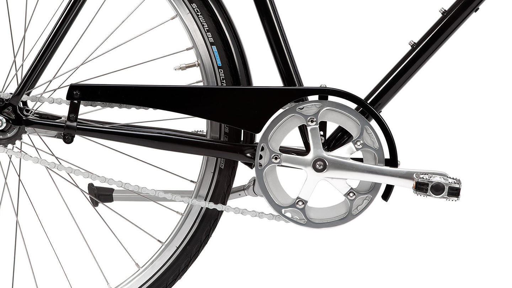Седло
Деталь велосипеда, на которой сидит велосипедист. Седло крепится к верхней части подседельного штыря. Может быть выполнено из различных материалов, иметь различную форму или отсутствовать в конструкции велосипеда вовсе, в зависимости от назначения велосипеда. Велосипедное сиденье, в отличие от велосипедного седла, предназначено для поддержки не только ягодиц водителя, но и спины, для чего имеет в конструкции спинку.
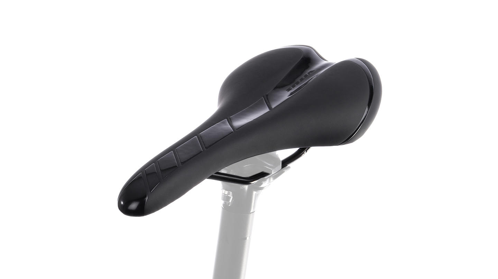Щиток
Деталь из металла или пластика, устанавливаемая над колесами велосипеда, которая захватывает и перенаправляет разбрызгиваемый шинами дорожный спрей из воды и грязи, позволяя велосипедисту оставаться относительно чистым во время движения. Существуют щитки для переднего и заднего колеса, различной формы, выполненные из различных материалов.
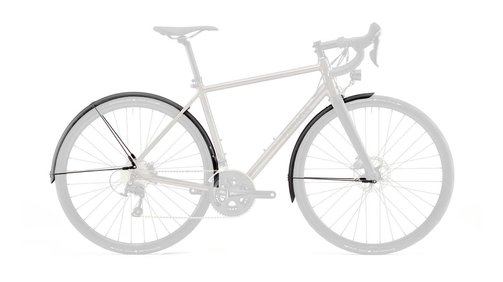Педаль
Деталь, которую велосипедист толкает ногой, чтобы привести велосипед в движение. Состоит из оси с подшипником, прикрепленной к шатуну, и платформы, на которую ставится стопа ездока. Платформа может быть плоской или иметь специальное крепление к обуви велосипедиста.
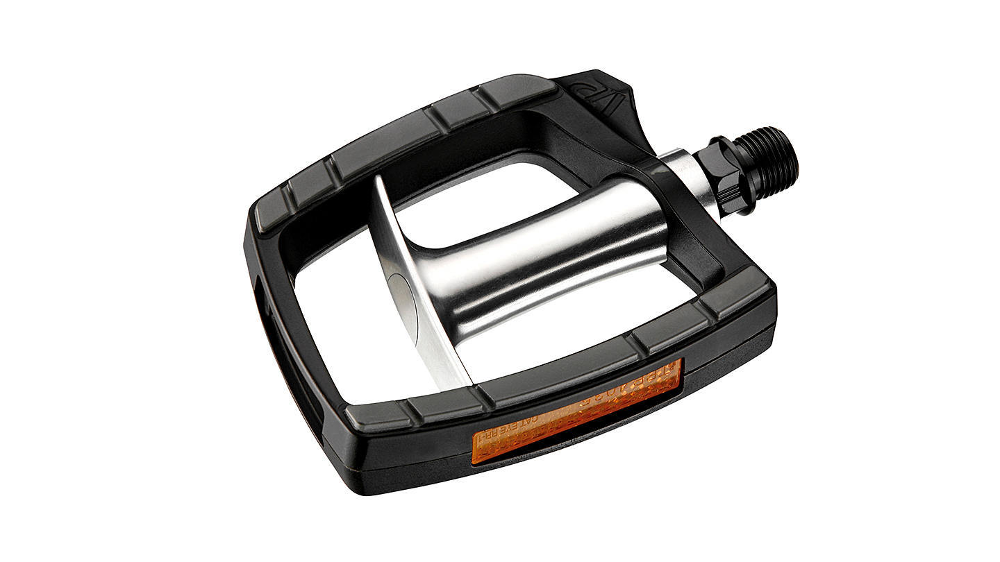Грипсы
Парная деталь руля велосипеда, представляющая собой ручки или наконечники на концах руля. Могут быть сделаны из резины, мягкого пластика, кожи или других материалов, которые делают захват руля рукой комфортным и эргономичным.
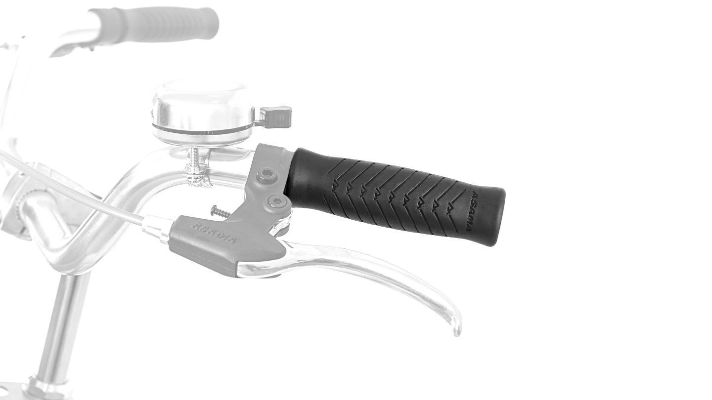